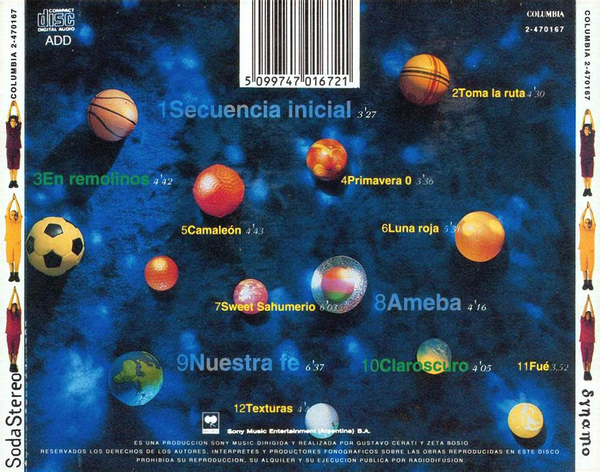

Dynamo es el sexto álbum de estudio de la banda de rock argentina Soda Stereo. Fue grabado y mezclado en Buenos Aires en el año 1992. En el tiempo de su lanzamiento la recepción por parte del público fue tibia en comparación con el éxito que tuvo el anterior trabajo de la banda, Canción animal. El disco representa un cambio profundo de sonido con respecto a álbumes previos. A lo largo de sus 12 canciones, muestra el interés de la banda por explorar nuevos sonidos, con especial énfasis en el shoegazing, que es el género que domina el disco y del cual este álbum es considerado uno de los más importantes referentes.
Dynamo salió al mercado en octubre de 1992 con un estilo muy particular: prevaleció una mezcla de sonidos que iban desde la experimentación hasta lo electrónico.
Esta producción de la legendaria banda argentina, es un disco que generó todo tipo de ruidos y miradas a un fenómeno humano y musical que los ponía como ejemplo para el continente nuevamente.
Y en 1992, el 26 de octubre, la espera terminó. Dynamo apareció para armar una nueva historia. Su propia historia. La de una banda que estaba a tono con el mundo y su oferta sonora y que la traía al continente. Pero también para mostrar que una disco adelantado que terminó siendo un conflicto para la banda y para su compañía discográfica.
Luego de su presentación, la banda emprendió una gira de respaldo que comenzó por ciudades argentinas. Pasó por Paraguay, Venezuela y México. Y en la mitad de ella, en 1993, la banda cancela las fechas que faltaban y decide tomar un largo descanso. Tan largo que fue hasta 1995 cuando se volvió a escuchar su último disco: Sueño Stereo.